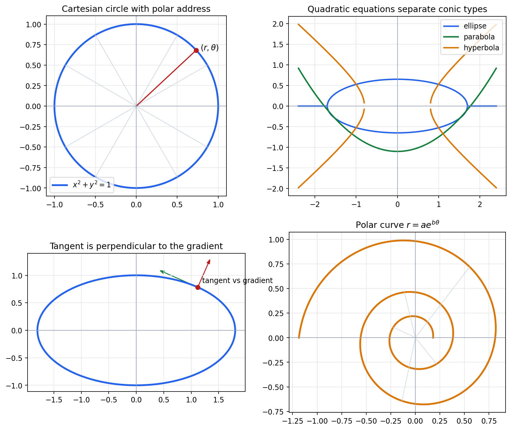
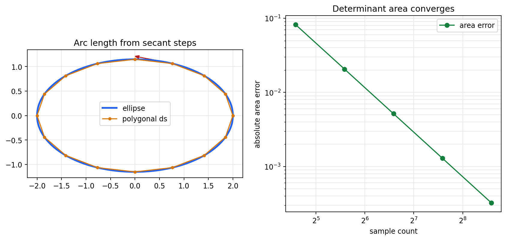
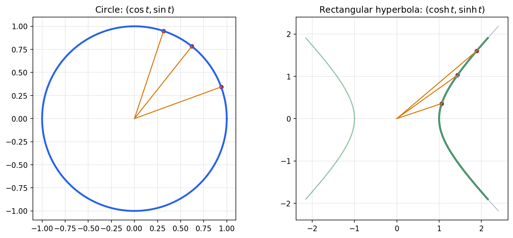
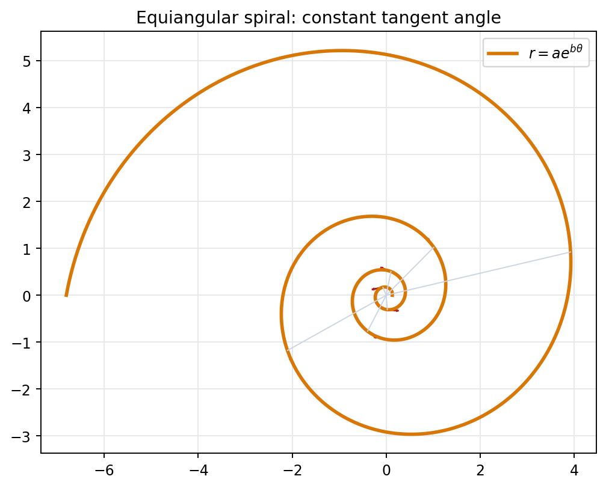
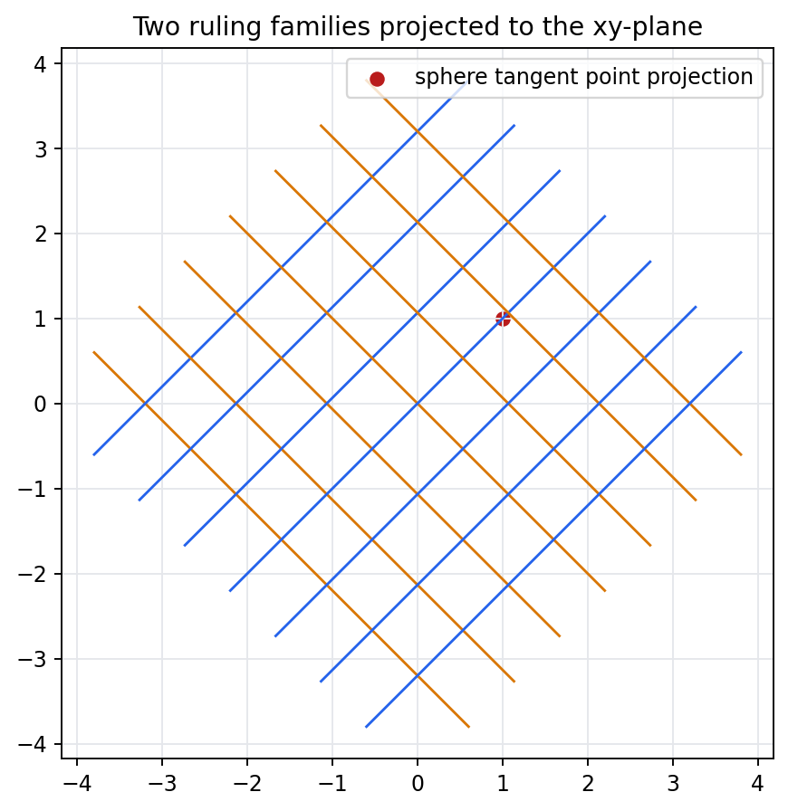

A coordinate system is a deliberate language for making one geometric feature visible: a tangent, a length, an area, a conic type, or a spatial ruling.
Source Span
Printed pages 107-134; PDF pages 125-152.
Chapter Goal
Choose coordinates that preserve the object while simplifying the question.
Inspection Target
Compare multiple coordinate views of the same geometric structure.

Chapter RouteFrom conics to ruled quadrics
Coordinate Choices Should Make Invariants Easier To Inspect
Dictionary
Cartesian, polar, conic, and tangent representations on one stage.
Length and Area
Approximate curves by polygonal length and determinant-style area.
Function Coordinates
Circular and hyperbolic identities encode sector geometry.
Spiral
Polar form exposes constant angle and self-similarity.
3D Coordinates
Tangent planes and ruled quadrics become coordinate constructions.
Quadratic Lab
Discriminants select a useful coordinate view.
Coordinate DictionaryConics and tangents
One Curve Can Be Read In Several Coordinate Languages
Conic Discriminant
$$\Delta=B^2-4AC$$
Ellipse
\(\Delta=-16\)
Hyperbola
\(\Delta=4\)
Parabola
\(\Delta=0\)
Tangent Check
\(-5.55\times10^{-17}\)
Reading Strategy
The best coordinates are the ones that make the chosen invariant almost visible before computation.
Arc Length and AreaApproximation as coordinate measurement
Length and Area Converge Through Different Summaries
Last Polygon Length
10.07688
Ramanujan Estimate
10.07699
Exact Ellipse Area
7.22566
Last Area Error
3.22e-4

Circular and Hyperbolic CoordinatesTwo sector languages
Parallel Identities Hide Different Geometries

Identities
$$\cos^2 u+\sin^2 u=1$$
$$\cosh^2 u-\sinh^2 u=1$$
Derivative
\(d(\cos u)=-\sin u\)
Derivative
\(d(\sinh u)=\cosh u\)
Interpretation
Both parameter systems encode sector geometry, but the signs determine circle versus rectangular hyperbola behavior.
Equiangular SpiralConstant angle and self-similarity
Polar Coordinates Reveal The Spiral's Invariant Angle
Logarithmic Spiral
$$r=a e^{b\theta},\qquad b=0.18$$
Tangent Angle
79.796 deg
Angle Spread
1.42e-14
Self-Similarity Scales
\(1.0,\ 1.327,\ 1.760,\ 2.336\)

Three-Dimensional CoordinatesTangent planes and ruled quadrics
Coordinates Can Construct Surfaces, Not Only Describe Them
Sphere Check
Sphere radius squared is \(4.0\), and the tangent point norm squared is \(4.0\).
Tangent Plane
Plane residual at the tangent point is \(0.0\).
Ruled Surface
Two straight-line families are sampled, with seven lines per family.
Projection Figure
The static projection shows how coordinate lines sweep a hyperbolic paraboloid.
Quadratic Coordinate View LabDiscriminant as classifier
The Discriminant Selects The Natural Coordinate View
Classification
$$\Delta=B^2-4AC$$
Elliptic
Circle and ellipse: use Cartesian or polar axes scaled by semi-axes.
Parabolic
Parabola: use an axis plus tangent direction.
Hyperbolic
Hyperbola and rotated hyperbola: use asymptote frames or rotate to principal directions.
Representative Discriminants
Circle: \(-4\)
Ellipse: \(-144\)
Parabola: \(0\)
Hyperbola: \(4\)
Rotated hyperbola: \(5\)

Coordinate StrategyChoose the view to match the invariant
The Object Stays Fixed; The Coordinate View Does The Work
Tangent
Use gradient coordinates and check perpendicularity.
Area
Use determinant sums or shoelace coordinates.
Sector
Use circular or hyperbolic parameters according to the quadratic form.
Spiral
Use polar coordinates to expose constant tangent angle.
Ruled Surface
Use line-family coordinates to construct a surface.
Conic Type
Use discriminants and axis changes to pick the simple view.
Working Principle
Coordinates are successful when a geometric invariant becomes either a constant, a sign, a zero residual, or a simple family parameter.
Lecture RecapCoordinate instruments
Coordinate Geometry Turns Pictures Into Computable Invariants
Conics
The discriminant \(B^2-4AC\) separates elliptic, parabolic, and hyperbolic behavior.
Limits
Polygonal length and determinant area converge as samples increase.
Functions
Circular and hyperbolic coordinates encode different sector geometries.
3D
Tangent planes and ruled quadrics become inspectable coordinate families.